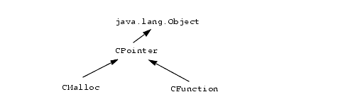
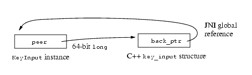

| Contents | Prev | Next | Index | The Java Native Interface Programmer's Guide and Specification |
One of the applications of the JNI is to write native methods that leverage code in existing native libraries. A typical approach, covered in this chapter, is to produce a class library that wraps a set of native functions.
This chapter first discusses the most straightforward way to write wrapper classes -- one-to-one mapping. We then introduce a technique, shared stubs, that simplifies the task of writing wrapper classes.
One-to-one mapping and shared stubs are both techniques for wrapping native functions. At the end of this chapter, we will also discuss how to wrap native data structures using peer classes.
The approaches described in this chapter directly expose a native library using native methods, and thus have the disadvantage of making an application calling such native methods dependent on that native library. Such an application may run only on an operating system that supplies the native library. A preferred approach is to declare operating system-independent native methods. Only the native functions implementing those native methods use the native libraries directly, limiting the need for porting to those native functions. The application, including the native method declarations, does not need to be ported.
Let us begin with a simple example. Suppose that we want to write a wrapper class that exposes the atol function in the standard C library:
long atol(const char *str);
The atol function parses a string and returns the decimal value represented by the string. There is perhaps little reason to define such a native method in practice because the Integer.parseInt method, part of the Java API, supplies the equivalent functionality. Evaluating atol("100"), for example, results in the integer value 100. We define a wrapper class as follows:
public class C {
public static native int atol(String str);
...
}
For the sake of illustrating JNI programming in C++, we will implement native methods in this chapter using C++ (§8.6). The C++ implementation of the C.atol native method is as follows:
JNIEXPORT jint JNICALL Java_C_atol(JNIEnv *env, jclass cls, jstringstr){const char *cstr = env->GetStringUTFChars(str, 0); if (cstr == NULL) { return 0; /* out of memory */ } int result = atol(cstr); env->ReleaseStringUTFChars(str, cstr); return result;}
The implementation is quite straightforward. We use GetStringUTFChars to convert the Unicode string because decimal numbers are ASCII characters.
Let us now examine a more complex example that involves passing structure pointers to a C function. Suppose that we want to write a wrapper class that exposes the CreateFile function from the Win32 API:
typedef void * HANDLE;
typedef long DWORD;
typedef struct {...} SECURITY_ATTRIBUTES;
HANDLE CreateFile(
const char *fileName, // file name
DWORD desiredAccess, // access (read-write) mode
DWORD shareMode, // share mode
SECURITY_ATTRIBUTES *attrs, // security attributes
DWORD creationDistribution, // how to create
DWORD flagsAndAttributes, // file attributes
HANDLE templateFile // file with attr. to copy
);
The CreateFile function supports a number of Win32-specific features not available in the platform-independent Java File API. For example, the CreateFile function may be used to specify special access modes and file attributes, to open Win32 named pipes, and to handle serial port communications.
We will not discuss further details of the CreateFile function in this book. The focus will be on how CreateFile may be mapped to a native method defined in a wrapper class called Win32:
public class Win32 {
public static native int CreateFile(
String fileName, // file name
int desiredAccess, // access (read-write) mode
int shareMode, // share mode
int[] secAttrs, // security attributes
int creationDistribution, // how to create
int flagsAndAttributes, // file attributes
int templateFile); // file with attr. to copy
...
}
The mapping from the char pointer type to String is obvious. We map the native Win32 type long (DWORD) to int in the Java programming language. The Win32 type HANDLE, an opaque 32-bit pointer type, is also mapped to int.
Because of potential differences in how fields are laid out in memory, we do not map C structures to classes in the Java programming language. Instead, we use an array to store the contents of the C structure SECURITY_ATTRIBUTES. The caller may also pass null as secAttrs to specify the default Win32 security attributes. We will not discuss the contents of the SECURITY_ATTRIBUTES structure or how to encode that in an int array.
A C++ implementation of the above native method is as follows:
JNIEXPORT jint JNICALL Java_Win32_CreateFile(
JNIEnv *env,
jclass cls,
jstring fileName, // file name
jint desiredAccess, // access (read-write) mode
jint shareMode, // share mode
jintArray secAttrs, // security attributes
jint creationDistribution, // how to create
jint flagsAndAttributes, // file attributes
jint templateFile) // file with attr. to copy
{
jint result = 0;
jint *cSecAttrs = NULL;
if (secAttrs) {
cSecAttrs = env->GetIntArrayElements(secAttrs, 0);
if (cSecAttrs == NULL) {
return 0; /* out of memory */
}
}
char *cFileName = JNU_GetStringNativeChars(env, fileName);
if (cFileName) {
/* call the real Win32 function */
result = (jint)CreateFile(cFileName,
desiredAccess,
shareMode,
(SECURITY_ATTRIBUTES *)cSecAttrs,
creationDistribution,
flagsAndAttributes,
(HANDLE)templateFile);
free(cFileName);
}
/* else fall through, out of memory exception thrown */
if (secAttrs) {
env->ReleaseIntArrayElements(secAttrs, cSecAttrs, 0);
}
return result;
}
First, we convert the security attributes stored in the int array into a jint array. If the secAttrs argument is a NULL reference, we pass NULL as the security attribute to the Win32 CreateFile function. Next, we call the utility function JNU_GetStringNativeChars (§8.2.2) to obtain the file name represented as a locale-specific C string. Once we have converted the security attributes and file name, we pass the results of the conversions and the remaining arguments to the Win32 CreateFile function.
We take care to check for exceptions and release virtual machine resources (such as cSecAttrs).
The C.atol and Win32.CreateFile examples demonstrate a common approach to writing wrapper classes and native methods. Each native function (for example, CreateFile) maps to a single native stub function (for example, Java_Win32_CreateFile), which in turn maps to a single native method definition (for example, Win32.CreateFile). In one-to-one mapping, the stub function serves two purposes:
JNIEnv pointer and the "this" pointer).
The one-to-one mapping approach requires you to write one stub function for each native function you want to wrap. This becomes tedious when you are faced with the task of writing wrapper classes for a large number of native functions. In this section we introduce the concept of shared stubs and demonstrate how shared stubs may be used to simplify the task of writing wrapper classes.
A shared stub is a native method that dispatches to other native functions. The shared stub is responsible for converting the argument types from what is provided by the caller to what is accepted by the native functions.
We will soon introduce a shared stub class CFunction, but first let us show how it can simplify the implementation of the C.atol method:
public class C {
private static CFunction c_atol =
new CFunction("msvcrt.dll", // native library name
"atol", // C function name
"C"); // calling convention
public static int atol(String str) {
return c_atol.callInt(new Object[] {str});
}
...
}
C.atol is no longer a native method (and thus no longer needs a stub function). Instead, C.atol is defined using the CFunction class. The CFunction class internally implements a shared stub. The static variable C.c_atol stores a CFunction object that corresponds to the C function atol in the msvcrt.dll library (the multithreaded C library on Win32). The CFunction constructor call also specifies that atol follows the C calling convention (§11.4). Once the c_atol field is initialized, calls to the C.atol method need only to redispatch through c_atol.callInt, the shared stub.
The CFunction class belongs to a class hierarchy that we will build up and use shortly:
Instances of the CFunction class denote a pointer to a C function. CFunction is a subclass of CPointer, which denotes arbitrary C pointers:
public class CFunction extends CPointer {
public CFunction(String lib, // native library name
String fname, // C function name
String conv) { // calling convention
...
}
public native int callInt(Object[] args);
...
}
The callInt method takes as its argument an array of java.lang.Object. It inspects the types of the elements in the array, converts them (from jstring to char *, for example), and passes them as arguments to the underlying C function. The callInt method then returns the result of the underlying C function as an int. The CFunction class can define methods such as callFloat or callDouble to handle C functions with other return types.
The CPointer class is defined as follows:
public abstract class CPointer {
public native void copyIn(
int bOff, // offset from a C pointer
int[] buf, // source data
int off, // offset into source
int len); // number of elements to be copied
public native void copyOut(...);
...
}
CPointer is an abstract class that supports arbitrary access to C pointers. The copyIn method, for example, copies a number of elements from an int array to the location pointed to by the C pointer. This method should be used with care because it can easily be used to corrupt arbitrary memory locations in the address space. Native methods such as CPointer.copyIn are as unsafe as direct pointer manipulation in C.
CMalloc is a subclass of CPointer that points to a block of memory allocated in the C heap using malloc:
public class CMalloc extends CPointer {
public CMalloc(int size) throws OutOfMemoryError { ... }
public native void free();
...
}
The CMalloc constructor allocates a memory block of the given size in the C heap. The CMalloc.free method releases the memory block.
Equipped with the CFunction and CMalloc classes, we can reimplement Win32.CreateFile as follows:
public class Win32 {
private static CFunction c_CreateFile =
new CFunction ("kernel32.dll", // native library name
"CreateFileA", // native function
"JNI"); // calling convention
public static int CreateFile(
String fileName, // file name
int desiredAccess, // access (read-write) mode
int shareMode, // share mode
int[] secAttrs, // security attributes
int creationDistribution, // how to create
int flagsAndAttributes, // file attributes
int templateFile) // file with attr. to copy
{
CMalloc cSecAttrs = null;
if (secAttrs != null) {
cSecAttrs = new CMalloc(secAttrs.length * 4);
cSecAttrs.copyIn(0, secAttrs, 0, secAttrs.length);
}
try {
return c_CreateFile.callInt(new Object[] {
fileName,
new Integer(desiredAccess),
new Integer(shareMode),
cSecAttrs,
new Integer(creationDistribution),
new Integer(flagsAndAttributes),
new Integer(templateFile)});
} finally {
if (secAttrs != null) {
cSecAttrs.free();
}
}
}
...
}
We cache the CFunction object in a static variable. The Win32 API CreateFile is exported from kernel32.dll as CreateFileA. Another exported entry, Create-FileW, takes a Unicode string as the file name argument. This function follows the JNI calling convention, which is the standard Win32 calling convention (stdcall).
The Win32.CreateFile implementation first allocates a memory block in the C heap that is big enough to hold the security attributes temporarily. It then packages all arguments in an array and invokes the underlying C function CreateFileA through the shared dispatcher. Finally the Win32.CreateFile method frees the C memory block used to hold the security attributes. We call cSec-Attrs.free in a finally clause to make sure the temporarily C memory is freed even if the c_CreateFile.callInt call raises an exception.
One-to-one mapping and shared stubs are two ways of building wrapper classes for native libraries. Each has its own advantages.
The main advantage of shared stubs is that the programmer need not write a large number of stub functions in native code. Once a shared stub implementation such as CFunction is available, the programmer may be able to build wrapper classes without writing a single line of native code.
Shared stubs must be used with care, however. With shared stubs, programmers are essentially writing C code in the Java programming language. This defeats the type safety of the Java programming language. Mistakes in using shared stubs can lead to corrupted memory and application crashes.
The advantage of one-to-one mapping is that it is typically more efficient in converting the data types that are transferred between the Java virtual machine and native code. Shared stubs, on the other hand, can handle at most a predetermined set of argument types and cannot achieve optimal performance even for these argument types. The caller of CFunction.callInt always has to create an Integer object for each int argument. This adds both space and time overhead to the shared stubs scheme.
In practice, you need to balance performance, portability, and short-term productivity. Shared stubs may be suitable for leveraging inherently nonportable native code that can tolerate a slight performance degradation, whereas one-to-one mapping should be used in cases where top performance is necessary or where portability matters.
We have so far treated CFunction, CPointer, and CMalloc classes as black boxes. This section describes how they may be implemented using the basic JNI features.
We look at the CPointer class first because it is the superclass of both CFunction and CMalloc. The abstract class CPointer contains a 64-bit field, peer, that stores the underlying C pointer:
public abstract class CPointer {
protected long peer;
public native void copyIn(int bOff, int[] buf,
int off,int len);
public native void copyOut(...);
...
}
The C++ implementation of native methods such as copyIn is straightforward:
JNIEXPORT void JNICALL
Java_CPointer_copyIn__I_3III(JNIEnv *env, jobject self,
jint boff, jintArray arr, jint off, jint len)
{
long peer = env->GetLongField(self, FID_CPointer_peer);
env->GetIntArrayRegion(arr, off, len, (jint *)peer + boff);
}
FID_CPointer_peer is the precomputed field ID for CPointer.peer. The native method implementation uses the long name encoding scheme (§11.3) to resolve conflicts with implementations of overloaded copyIn native methods for other array types in the CPointer class.
The CMalloc class adds two native methods used to allocate and free C memory blocks:
public class CMalloc extends CPointer {
private static native long malloc(int size);
public CMalloc(int size) throws OutOfMemoryError {
peer = malloc(size);
if (peer == 0) {
throw new OutOfMemoryError();
}
}
public native void free();
...
}
The CMalloc constructor calls a native method CMalloc.malloc, and throws an OutOfMemoryError if CMalloc.malloc fails to return a newly -allocated memory block in the C heap. We can implement the CMalloc.malloc and CMalloc.free methods as follows:
JNIEXPORT jlong JNICALL
Java_CMalloc_malloc(JNIEnv *env, jclass cls, jint size)
{
return (jlong)malloc(size);
}
JNIEXPORT void JNICALL
Java_CMalloc_free(JNIEnv *env, jobject self)
{
long peer = env->GetLongField(self, FID_CPointer_peer);
free((void *)peer);
}
The CFunction class implementation requires the use of dynamic linking support in the operating system as well as CPU-specific assembly code. The implementation presented below is targeted specifically toward the Win32/Intel x86 environment. Once you understand the principles behind implementing the CFunction class, you can follow the same steps to implement it on other platforms.
The CFunction class is defined as follows:
public class CFunction extends CPointer {
private static final int CONV_C = 0;
private static final int CONV_JNI = 1;
private int conv;
private native long find(String lib, String fname);
public CFunction(String lib, // native library name
String fname, // C function name
String conv) { // calling convention
if (conv.equals("C")) {
conv = CONV_C;
} else if (conv.equals("JNI")) {
conv = CONV_JNI;
} else {
throw new IllegalArgumentException(
"bad calling convention");
}
peer = find(lib, fname);
}
public native int callInt(Object[] args);
...
}
The CFunction class declares a private field conv used to store the calling convention of the C function. The CFunction.find native method is implemented as follows:
JNIEXPORT jlong JNICALL
Java_CFunction_find(JNIEnv *env, jobject self, jstring lib,
jstring fun)
{
void *handle;
void *func;
char *libname;
char *funname;
if ((libname = JNU_GetStringNativeChars(env, lib))) {
if ((funname = JNU_GetStringNativeChars(env, fun))) {
if ((handle = LoadLibrary(libname))) {
if (!(func = GetProcAddress(handle, funname))) {
JNU_ThrowByName(env,
"java/lang/UnsatisfiedLinkError",
funname);
}
} else {
JNU_ThrowByName(env,
"java/lang/UnsatisfiedLinkError",
libname);
}
free(funname);
}
free(libname);
}
return (jlong)func;
}
CFunction.find converts the library name and function name to locale-specific C strings, and then calls the Win32 API functions LoadLibrary and GetProc-Address to locate the C function in the named native library.
The callInt method, implemented as follows, carries out the main task of redispatching to the underlying C function:
JNIEXPORT jint JNICALL
Java_CFunction_callInt(JNIEnv *env, jobject self,
jobjectArray arr)
{
#define MAX_NARGS 32
jint ires;
int nargs, nwords;
jboolean is_string[MAX_NARGS];
word_t args[MAX_NARGS];
nargs = env->GetArrayLength(arr);
if (nargs > MAX_NARGS) {
JNU_ThrowByName(env,
"java/lang/IllegalArgumentException",
"too many arguments");
return 0;
}
// convert arguments
for (nwords = 0; nwords < nargs; nwords++) {
is_string[nwords] = JNI_FALSE;
jobject arg = env->GetObjectArrayElement(arr, nwords);
if (arg == NULL) {
args[nwords].p = NULL;
} else if (env->IsInstanceOf(arg, Class_Integer)) {
args[nwords].i =
env->GetIntField(arg, FID_Integer_value);
} else if (env->IsInstanceOf(arg, Class_Float)) {
args[nwords].f =
env->GetFloatField(arg, FID_Float_value);
} else if (env->IsInstanceOf(arg, Class_CPointer)) {
args[nwords].p = (void *)
env->GetLongField(arg, FID_CPointer_peer);
} else if (env->IsInstanceOf(arg, Class_String)) {
char * cstr =
JNU_GetStringNativeChars(env, (jstring)arg);
if ((args[nwords].p = cstr) == NULL) {
goto cleanup; // error thrown
}
is_string[nwords] = JNI_TRUE;
} else {
JNU_ThrowByName(env,
"java/lang/IllegalArgumentException",
"unrecognized argument type");
goto cleanup;
}
env->DeleteLocalRef(arg);
}
void *func =
(void *)env->GetLongField(self, FID_CPointer_peer);
int conv = env->GetIntField(self, FID_CFunction_conv);
// now transfer control to func.
ires = asm_dispatch(func, nwords, args, conv);
cleanup:
// free all the native strings we have created
for (int i = 0; i < nwords; i++) {
if (is_string[i]) {
free(args[i].p);
}
}
return ires;
}
We assume that we have set up a number of global variables for caching the appropriate class references and field IDs. For example, global variable FID_CPointer_peer caches the field ID for CPointer.peer and global variable Class_String is a global reference to the java.lang.String class object. The word_t type represents a machine word and is defined as follows:
typedef union {
jint i;
jfloat f;
void *p;
} word_t;
The Java_CFunction_callInt function iterates through the argument array, and checks the type of each element:
null reference, it is passed as a NULL pointer to the C function. java.lang.Integer class, the integer value is fetched and passed to the C function.java.lang.Float class, the floating-point value is fetched and passed to the C function.CPointer class, the peer pointer is fetched and passed to the C function.java.lang.String, it is converted to a locale-specific C string and passed to the C function.IllegalArgumentException is thrown.We carefully check for possible errors during argument conversion and free all the temporary storage allocated for C strings before returning from the Java_CFunction_callInt function.
The code that transfers the arguments from the temporary buffer args to the C function needs to manipulate the C stack directly. It is written in inlined assembly:
int asm_dispatch(void *func, // pointer to the C function
int nwords, // number of words in args array
word_t *args, // start of the argument data
int conv) // calling convention 0: C
// 1: JNI
{
__asm {
mov esi, args
mov edx, nwords
// word address -> byte address
shl edx, 2
sub edx, 4
jc args_done
// push the last argument first
args_loop:
mov eax, DWORD PTR [esi+edx]
push eax
sub edx, 4
jge SHORT args_loop
args_done:
call func
// check for calling convention
mov edx, conv
or edx, edx
jnz jni_call
// pop the arguments
mov edx, nwords
shl edx, 2
add esp, edx
jni_call:
// done, return value in eax
}
}
The assembly routine copies the arguments onto the C stack, then redispatches to the C function func. After func returns, the asm_dispatch routine checks func's calling convention. If func follows the C calling convention, asm_dispatch pops the arguments passed to func. If func follows the JNI calling convention, asm_dispatch does not pop the arguments; func pops the arguments before it returns.
One-to-one mapping and shared stubs both address the problem of wrapping native functions. We also encountered the problem of wrapping native data structures in the course of constructing the shared stubs implementation. Recall the definition of the CPointer class:
public abstract class CPointer {
protected long peer;
public native void copyIn(int bOff, int[] buf,
int off, int len);
public native void copyOut(...);
...
}
It contains a 64-bit peer field that refers to the native data structure (in this case, a piece of memory in the C address space). Subclasses of CPointer assign specific meanings to the peer field. The CMalloc class, for example, uses the peer field to point to a chunk of memory in the C heap:
Classes that directly correspond to native data structures, such as CPointer and CMalloc, are called peer classes. You can construct peer classes for a variety of native data structures, including, for example:
The current JDK and Java 2 SDK releases (1.1 and 1.2) use peer classes internally to implement the java.io, java.net, and java.awt packages. An instance of the java.io.FileDescriptor class, for example, contains a private field fd that represents a native file descriptor:
// Implementation of the java.io.FileDescriptor class
public final class FileDescriptor {
private int fd;
...
}
Suppose that you want to perform a file operation that is not supported by the Java platform API. You might be tempted to use the JNI to find out the underlying native file descriptor of a java.io.FileDescriptor instance. The JNI allows you to access a private field, as long as you know its name and type. You might think that you could then perform the native file operation directly on that file descriptor. This approach, however, has a couple of problems:
java.io.File-Descriptor implementation that stores the native file descriptor in a private field called fd. There is no guarantee, however, that future implementations from Sun or third-party implementations of the java.io.FileDescriptor class will still use the same private field name fd for the native file descriptor. Native code that assumes the name of the peer field may fail to work with a different implementation of the Java platform.java.io.FileDescriptor instances maintain an internal state indicating whether the underlying native file descriptor has been closed. If you use native code to bypass the peer class and close the underlying file descriptor, the state maintained in the java.io.FileDescriptor instance will no longer be consistent with the true state of the native file descriptor. Peer class implementations typically assume that they have exclusive access to the underlying native data structure.
The only way to overcome these problems is to define your own peer classes that wrap native data structures. In the above case, you can define your own file descriptor peer class that supports the required set of operations. This approach does not let you use your own peer classes to implement Java API classes. You cannot, for example, pass your own file descriptor instance to a method that expects a java.io.FileDescriptor instance. You can, however, easily define your own peer class that implements a standard interface in the Java API. This is a strong argument for designing APIs based on interfaces instead of classes.
Peer classes are defined in the Java programming language; thus instances of peer classes will be garbage collected automatically. You need to make sure, however, that the underlying native data structures will be freed as well.
Recall that the CMalloc class contains a free method for explicitly freeing the malloc'ed C memory:
public class CMalloc extends CPointer {
public native void free();
...
}
You must remember to call free on instances of the CMalloc class; otherwise a CMalloc instance may be garbage collected, but its corresponding malloc'ed C memory will never be reclaimed.
Some programmers like to put a finalizer in peer classes such as CMalloc:
public class CMalloc extends CPointer {
public native synchronized void free();
protected void finalize() {
free();
}
...
}
The virtual machine calls the finalize method before it garbage collects an instance of CMalloc. Even if you forget to call free, the finalize method frees the malloc'ed C memory for you.
You need to make a small change to the CMalloc.free native method implementation to account for the possibility that it may be called multiple times. You also need to make CMalloc.free a synchronized method to avoid thread race conditions:
JNIEXPORT void JNICALL
Java_CMalloc_free(JNIEnv *env, jobject self)
{
long peer = env->GetLongField(self, FID_CPointer_peer);
if (peer == 0) {
return; /* not an error, freed previously */
}
free((void *)peer);
peer = 0;
env->SetLongField(self, FID_CPointer_peer, peer);
}
We set the peer field using two statements:
peer = 0; env->SetLongField(self, FID_CPointer_peer, peer);
env->SetLongField(self, FID_CPointer_peer, 0);
because C++ compilers will regard the literal 0 as a 32-bit integer, as opposed to a 64-bit integer. Some C++ compilers allow you to specify 64-bit integer literals, but using 64-bit literals will not be as portable.
Defining a finalize method is a proper safeguard, but you should never rely on finalizers as the sole means of freeing native data structures. The reason is that the native data structures may consume much more resources than their peer instances. The Java virtual machine may not garbage collect and finalize instances of peer classes fast enough to free up their native counterparts.
Defining a finalizer has performance consequences as well. It is typically slower to create and reclaim instances of classes with finalizers than to create and reclaim those without finalizers.
If you can always ensure that you manually free the native data structure for peer classes, you need not define a finalizer. You should make sure, however, to free native data structures in all paths of execution; otherwise you may have created a resource leak. Pay special attention to possible exceptions thrown during the process of using a peer instance. Always free native data structures in a finally clause:
CMalloc cptr = new CMalloc(10);
try {
... // use cptr
} finally {
cptr.free();
}
The finally clause ensures that cptr is freed even if an exception occurs inside the try block.
We have shown that peer classes typically contain a private field that refers to the underlying native data structure. In some cases it is desirable to also include a reference from the native data structure to instances of the peer class. This happens, for example, when the native code needs to initiate callbacks to instance methods in the peer class.
Suppose that we are building a hypothetical user interface component called KeyInput. KeyInput's native C++ component, key_input, receives an event as a key_pressed C++ function call from the operating system when the user presses a key. The key_input C++ component reports the operating system event to the KeyInput instance by calling the keyPressed method on the KeyInput instance. The arrows in the figure below indicate how a key press event is originated by a user key press and propagated from the key_input C++ component to the Key-Input peer instance:
The KeyInput peer class is defined as follows:
class KeyInput {
private long peer;
private native long create();
private native void destroy(long peer);
public KeyInput() {
peer = create();
}
public destroy() {
destroy(peer);
}
private void keyPressed(int key) {
... /* process the key event */
}
}
The create native method implementation allocates an instance of the C++ structure key_input. C++ structures are similar to C++ classes, with the only difference being that all members are by default public as opposed to private. We use a C++ structure instead of a C++ class in this example mainly to avoid confusion with classes in the Java programming language.
// C++ structure, native counterpart of KeyInput
struct key_input {
jobject back_ptr; // back pointer to peer instance
int key_pressed(int key); // called by the operating system
};
JNIEXPORT jlong JNICALL
Java_KeyInput_create(JNIEnv *env, jobject self)
{
key_input *cpp_obj = new key_input();
cpp_obj->back_ptr = env->NewGlobalRef(self);
return (jlong)cpp_obj;
}
JNIEXPORT void JNICALL
Java_KeyInput_destroy(JNIEnv *env, jobject self, jlong peer)
{
key_input *cpp_obj = (key_input*)peer;
env->DeleteGlobalRef(cpp_obj->back_ptr);
delete cpp_obj;
return;
}
The create native method allocates the C++ structure and initializes its back_ptr field to a global reference to the KeyInput peer instance. The destroy native method deletes the global reference to the peer instance and the C++ structure referred to by the peer instance. The KeyInput constructor calls the create native method to set up the links between a peer instance and its native counterpart:
When the user presses a key, the operating system calls the C++ member function key_input::key_pressed. This member function responds to events by issuing a callback to the keyPressed method on the KeyInput peer instance.
// returns 0 on success, -1 on failure
int key_input::key_pressed(int key)
{
jboolean has_exception;
JNIEnv *env = JNU_GetEnv();
JNU_CallMethodByName(env,
&has_exception,
java_peer,
"keyPressed",
"()V",
key);
if (has_exception) {
env->ExceptionClear();
return -1;
} else {
return 0;
}
}
The key_press member function clears any exceptions after the callback and returns error conditions to the operating system using the -1 return code. Refer to Sections 6.2.3 and 8.4.1 for the definitions of JNU_CallMethodByName and JNU_GetEnv utility functions respectively.
Let us discuss one final issue before concluding this section. Suppose that you add a finalize method in the KeyInput class to avoid potential memory leaks:
class KeyInput {
...
public synchronized destroy() {
if (peer != 0) {
destroy(peer);
peer = 0;
}
}
protect void finalize() {
destroy();
}
}
The destroy method checks whether the peer field is zero, and sets the peer field to zero after calling the overloaded destroy native method. It is defined as a synchronized method to avoid race conditions.
The above code will not work as you might expect, however. The virtual machine will never garbage collect any KeyInput instances unless you call destroy explicitly. The KeyInput constructor creates a JNI global reference to the KeyInput instance. The global reference prevents the KeyInput instance from being garbage collected. You can overcome this problem by using a weak global reference instead of a global reference:
JNIEXPORT jlong JNICALL
Java_KeyInput_create(JNIEnv *env, jobject self)
{
key_input *cpp_obj = new key_input();
cpp_obj->back_ptr = env->NewWeakGlobalRef(self);
return (jlong)cpp_obj;
}
JNIEXPORT void JNICALL
Java_KeyInput_destroy(JNIEnv *env, jobject self, jlong peer)
{
key_input *cpp_obj = (key_input*)peer;
env->DeleteWeakGlobalRef(cpp_obj->back_ptr);
delete cpp_obj;
return;
}
| Contents | Prev | Next | Index | The Java Native Interface Programmer's Guide and Specification |
Copyright © 2002 Sun Microsystems, Inc.
All rights reserved
Please send any comments or corrections to jni@java.sun.com